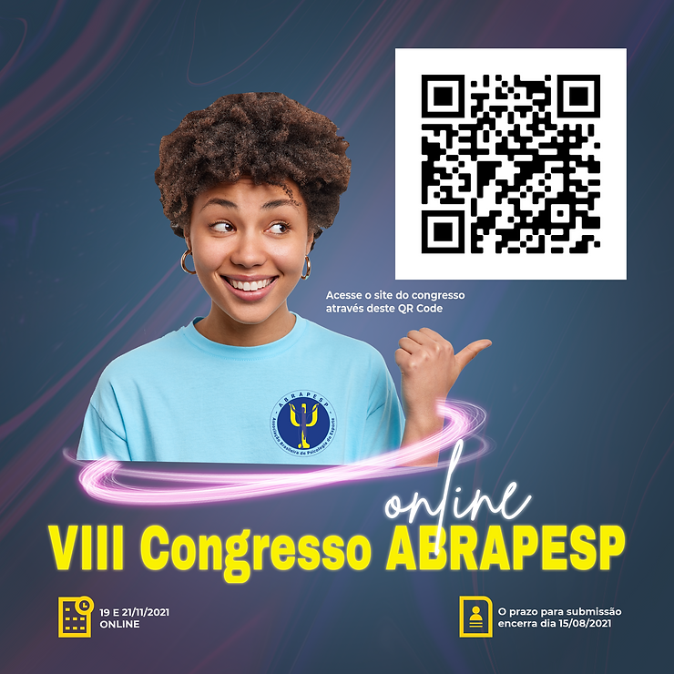

Se você pretende apresentar seu trabalho no VIII Congresso da ABRAPESP, atenção ao prazo: a submissão de trabalhos encerra dia 15 de agosto. E aproveite para fazer sua inscrição no evento, com maior desconto, até dia 10 de agosto.

A Prof. Erika, responsável pelo congresso, avisa mais algumas confirmações da programação:
Mesa de abertura: Por que Tokyo 2021? Com Katia Rubio e mais dois convidados.
Cultura e movimento: o cuidado na pesquisa em Psicologia do Esporte
Com Thabata Telles, Fabio Cardiás e Pedro Valério (a confirmar)
Saúde Mental e esporte em tempos de pandemia: o papel da psicologia do esporte
Com: Marina Gusson (psicóloga seleção brasileira de Futebol feminino), Marta Magalhães (psicóloga da CBF-arbitragem) e Mateus Vasconcelos Torres.
Espaço fazer psi :
Palestra com Maurício Pinto Marques: Viver de Clínica na Psicologia do Esporte-.
OFICINA: Corpo e Circo, com Marcela Laino
Momento esporte.
- Paraciclismo: avanços e perspectivas: um bate papo descontraído com atletas, gestores, treinadores, pesquisadores e psicólogos sobre modalidades de paraciclismo.
- Paradesporto no Vale do São Francisco – um bate papo descontraído com atletas, gestores, treinadores, pesquisadores e psicólogos sobre projetos ligados ao Para-atletismo e Para- canoagem na região do Vale do São Francisco.
Clique aqui e acesse o site do VIII Congresso